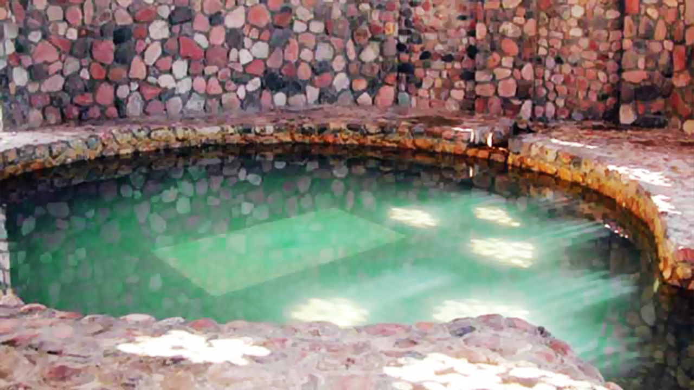
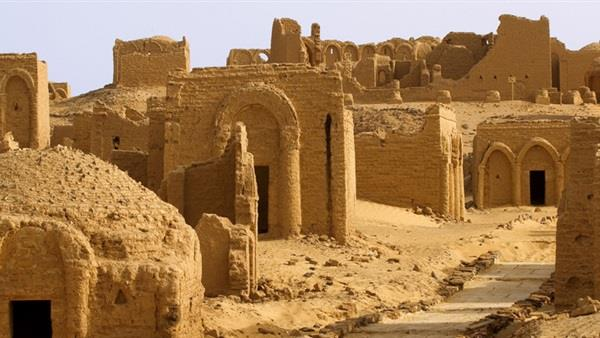
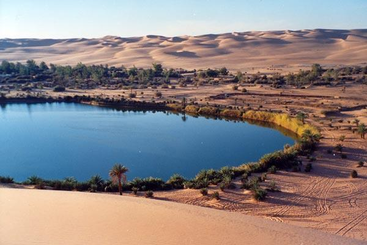
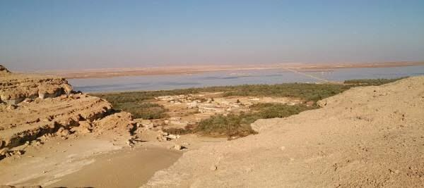
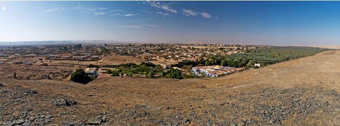
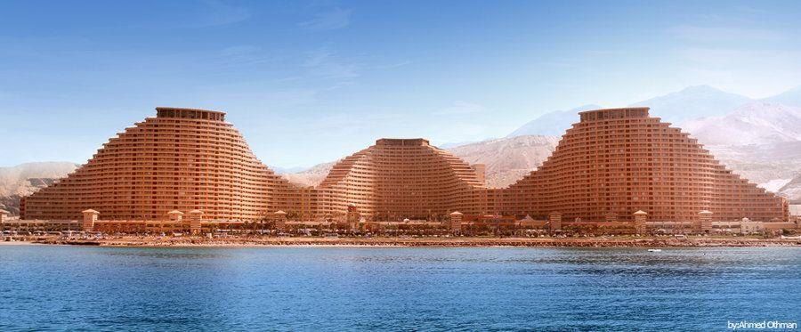
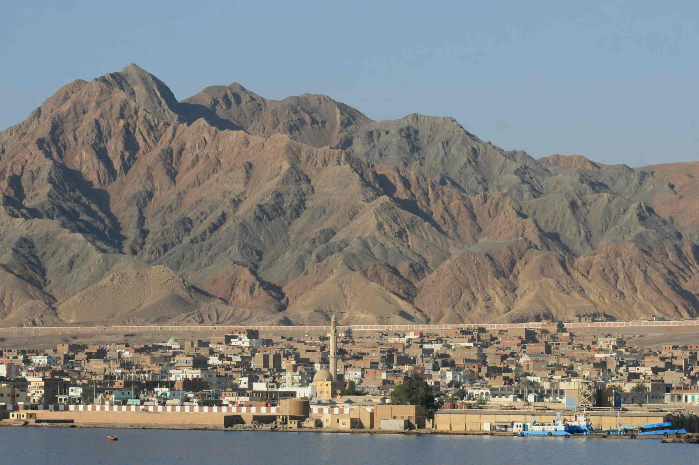
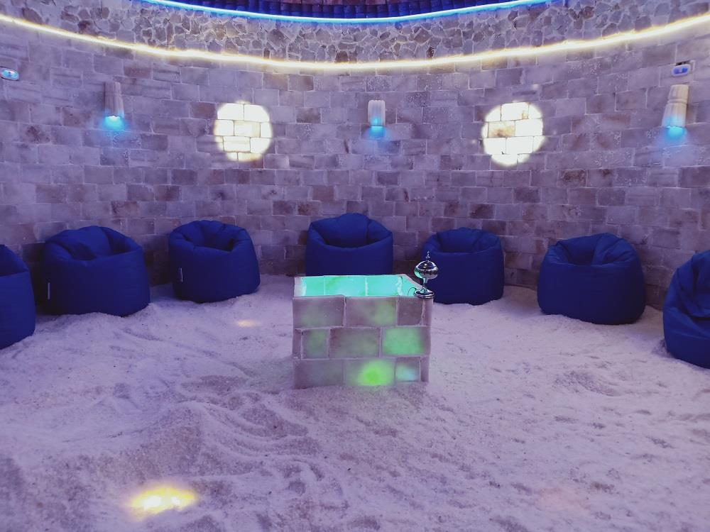
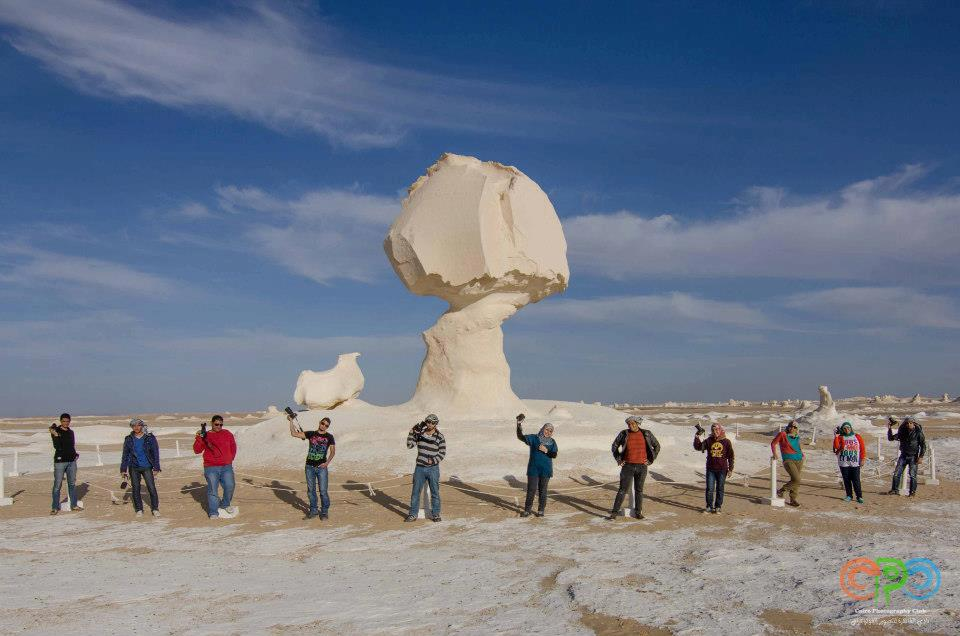
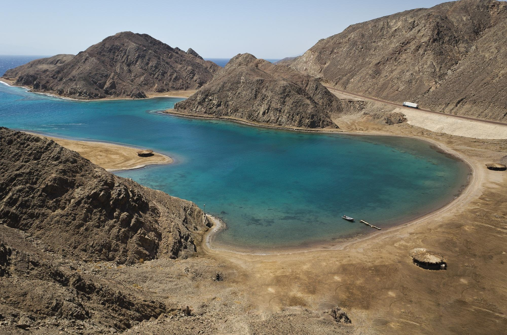

عين حلوان من أشهر العيون المائية في مصر، وتلك الشهرة بسبب كمية الكبريت المعالجة التي تصل إلى 27% وفي عام 1939م انفجرت عين ماء معدني طبيعية من باطن الأرض. تقع عيون حلوان فوق مستوى النيل بما يقرب من 33م ويبعد عنها النيل بمسافة تقدر بحوالي 4كم، والمنطقة الموجود فيها العيون تقدر بحوالي 4.5 كم في الناحية الشمالية الجنوبية وبحوالي 3.5 كم في الناحية الشرقية الغربية. وتوجدمحطة مترو باسم عين حلوان ويوجد فيها عين كبريتيه مقام عليها حمام سباحه مياه كبريتيه لاستخدامه. للتعرف علي فنادق السياحة العلاجية
تقع على بعد 232 كم جنوب أسيوط (جنوبي القاهرة)، تحتوي على آبار عميقة ذات فوائد علاجية مختلفة كآبار بولاق وآبار ناصر وآبار موط، التي تعمل على علاج الأمراض الروماتزمية والآلام المزمنة والأمراض الجلدية وحصى الكلى المصحوب بالمغص الكلوي، واضطرابات الجهاز الهضمي والصدفية وتنتشر بالقرب منها الكثبان الرملية الناعمة التي يمكن استخدامها للعلاج بالطمر في الرمال (العلاج بالدفن) في أمراض المفاصل مثل الروماتويد والالتهاب العظمي المفصلي، والآلام الناجمة عن ضمور غضاريف الفقرات الظهرية والقطنية والعجزية. للتعرف علي فنادق السياحة العلاجية
تنتشر بسيوة عيون المياه التي تستخدم للأغراض العلاجية من الأمراض الصدفية الروماتيزمية، وتعد "عين كيغار" أشهرها حيث تبلغ درجة حرارة مياهها 67 مئوية وتحتوي على عدة عناصر معدنية وكبريتية وبتحليل مياه هذا البئر وجد أنها تحتوي على عدة عناصر معدنية وكبريتية تماثل العيون المعدنية بمنطقة كارلو فيفاري التشيكية الشهيرة التي يقصدها السياح من شتى أنحاء العالم كمنتجع للعلاج الطبيعي. للتعرف علي فنادق السياحة العلاجية
يقع في الجنوب الشرقي من واحة سيوة، ويعتبره مواطنو سيوة جبلاً مقدساً، اكتسب الجبل عند الأهالي منذ القدم أهمية علاجية في الأمراض الروماتزمية وآلام المفاصل والشعور العام بالضعف والوهن. ويقوم على العلاج شيوخ متخصصون في طمر الجسم بالرمال (العلاج بالدفن) خلال ساعات محددة من النهار. للتعرف علي فنادق السياحة العلاجية
يوجد بها نحو 400 عين للمياه المعدنية والكبريتية الدافئة والباردة التي أثبتت البحوث قيمتها العلاجية في أمراض الروماتيوم والروماتويد والأمراض الجلدية، مما يؤهلها لأن تصبح من أهم المنتجعات العلاجية في العالم لتميزها بالمناخ الجاف المعتدل والشمس الساطعة طوال العام. للتعرف علي فنادق السياحة العلاجية
سميت بالعين السخنة لكثرة العيون الكبريتية الساخنة فيها والتي تستخدم كعلاج للعديد من الأمراض الجلدية والتهاب المفاصل والنقرس واضطرابات الدورة الدموية. للتعرف علي فنادق السياحة العلاجية
تحتوي رمال سفاجا على 3 مواد مشعة غير ضارة وهي: (اليورانيوم والثوريوم، والبوتاسيوم)، ونظرا لاحتوائها على كمية مرتفعة من أملاح الذهب تستخدم في علاج أمراض الروماتويد والارتشاح المفصلي، وعلاج الصدفية. للتعرف علي فنادق السياحة العلاجية
وجد في سيوة كهف ملحي مصنوع خصيصا للأشخاص الذين يعانون من الأمراض العصبية والنفسية فهو يساعد على خروج الطاقة السلبية من الجسم واستبدالها بطاقة إيجابية، ويساعد على التخلص من التوتر، كما يعالج حساسية الصدر والغدة الدرقية وارتفاع ضغط الدم. للتعرف علي فنادق السياحة العلاجية
هي إحدى محافظات مصر، فتتميّز هذه المنطقةُ بجوّها الرّائع، وخلوها من الرّطوبة، كما تتواجد بها العديد من الأعشاب الطبيّة والتّي تستخدم لعلاج العديد من الأمراض، كما توجد بعض العيون العلاجية في المنطقة والتّي تصل حرارتها إلى 34 درجة مئوية، وتوجد بها العديد من المعادن المفيدة للجسم. للتعرف علي فنادق السياحة العلاجية
تحتوي سيناء على الكثير من العيون المائية أشهرها حمام فرعون وحمامات موسى ووادي مغارة ودير السبع بنات، وهي أماكن سياحية ربما لم تسمع عنها من قبل، لكنها توجد هنا في سيناء المليئة بالكنوز السياحية، حيث تحتوي على المياه الكبريتية، والتي تستخدم في علاج الكثير من الأمراض كالروماتيزم وأمراض الجهاز الهضمي وحساسية الرئة وأمراض الكبد والأمراض الجلدية وإصابات الملاعب. للتعرف علي فنادق السياحة العلاجية
فصلي الخريف و الربيع حيث اعتدال الجو في هذين الفصلين مما يؤدي الي الاستفادة القصوي من فوائد المناخ وتأثيره علي عناصر السياحة العلاجية في مصر
يتم علاج اي حالة في خلال ثلاثة جلسات بحد اقصى سبع جلسات مع العلم ان الجسم لايستفيد بزايدة عدد الجلسات
، وتكون مدة الجلسة الواحدة 15 دقيقة لا أكثر. للتعرف علي فنادق السياحة العلاجية